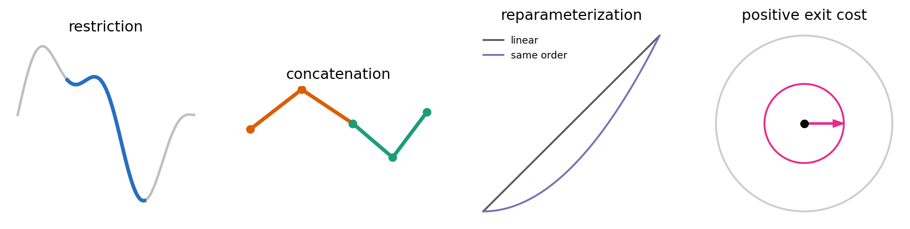
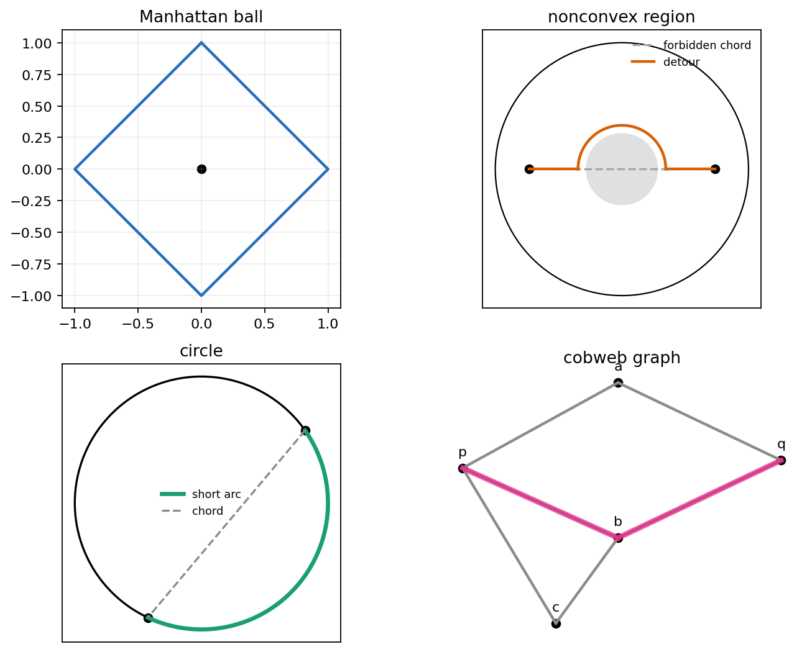
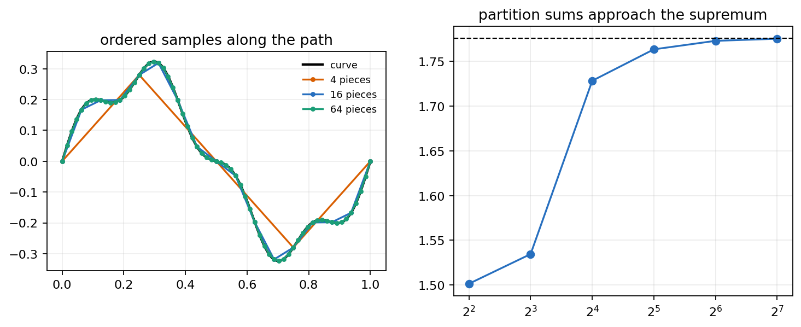
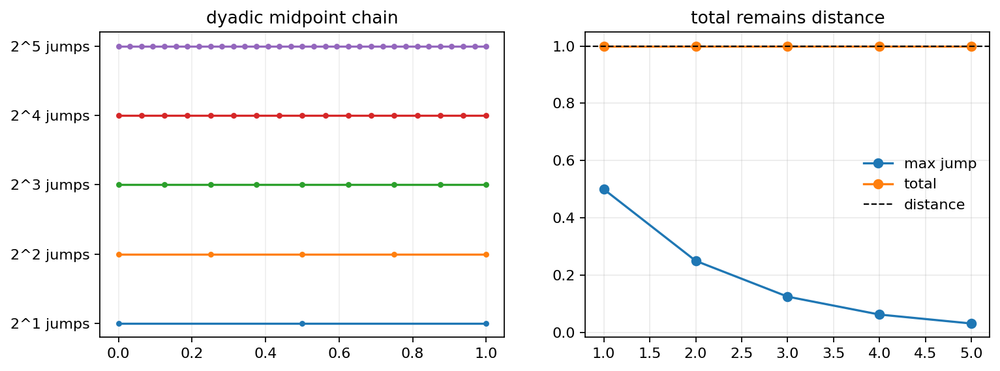
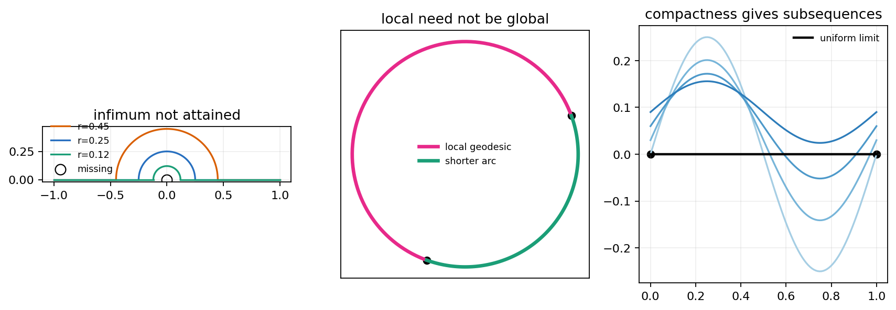
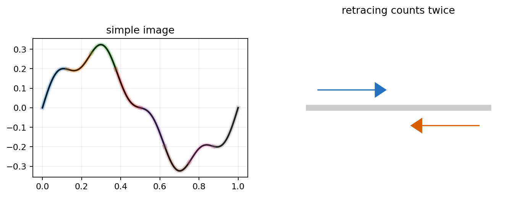
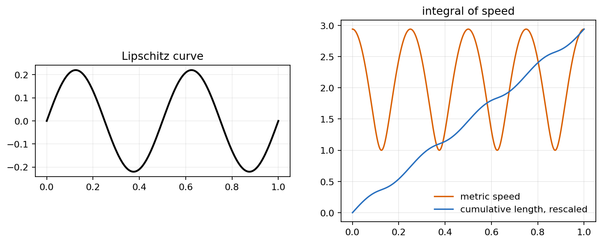

A chapter-specific lecture from A Course in Metric Geometry, Chapter 2.
Source grounding. Notebook: A-Course-in-Metric-Geometry/chapter-02-length-spaces/02-length-spaces.ipynb. Source span: printed pages 25-58; PDF pages 40-73. Source PDF: A-Course-in-Metric-Geometry/A Course in Metric Geometry.pdf.

Subpaths remain admissible and inherit length.
Legal pieces glue and their lengths add.
Changing speed cannot change the path length.
Escaping a neighborhood costs a positive amount.
The path system partitions the space into finite-distance components, just as Chapter 1's infinite metrics did.

Legal directions create diamond balls.
The forbidden chord is shorter but illegal.
Intrinsic arc distance can exceed chord distance.
Distance follows edges, not ambient straight lines.

Refining the partition sees more of the curve's oscillation.
The notebook's partition sums are monotone and approach the dense curve length within the sanity tolerance.
Choose ordered times \(a=t_0<t_1<\cdots<t_N=b\). Add the metric jumps between consecutive samples.
Take the largest forced total over all finite partitions. Finer observations can only reveal more length.
Distances can be recovered by arbitrarily fine path approximations.
The original metric allows jumps or chords that the legal path geometry cannot realize.

Can \(x\) and \(y\) be joined by finite chains with very small jumps and total length close to \(d(x,y)\)?
Dyadic midpoint chains keep total length equal to the endpoint distance while the maximum jump tends to zero.
This is a finite, checkable version of approximating a path by increasingly fine pieces.
For every pair \(x,y\), there is \(m\) with \(d(x,m)=d(m,y)=d(x,y)/2\).
The dyadic choices need a limiting curve. Completeness prevents the candidate path from disappearing.

A path realizes the global distance between its endpoints.
A path may be locally minimizing while a different global route is shorter.
Infimum not attained; local minimizer not global; compactness needed for subsequential limits.
Compactness turns minimizing sequences into convergent subsequences.
In complete locally compact length spaces, closed bounded balls behave compactly enough for path existence.

When a curve traces its image once, length and one-dimensional Hausdorff measure agree.
Cover the image by short curve intervals, and use connected-set diameter estimates in the other direction.
The image set alone does not remember how many times the curve traversed it.
\(\mathcal{H}^1\) measures the set. Length measures the path with multiplicity.

The notebook check records the speed-integral relative error below \(10^{-5}\).
Pick two points and a scale \(\epsilon\). Build a chain whose jumps are below \(\epsilon\), then compare the chain's total length to the claimed distance.
Admissible paths and legal length rules induce a metric by infimum.
A metric measures curves through supremums of partition sums.
Path metrics are fixed points of the metric-length-metric conversion.
Attained infima need compactness, completeness, or related structure.
Simple curve length matches one-dimensional Hausdorff measure of the image.
Lipschitz speed integrates to total length almost everywhere.
Next lecture. Constructions ask how metrics behave under gluing, quotients, coverings, products, and cones.